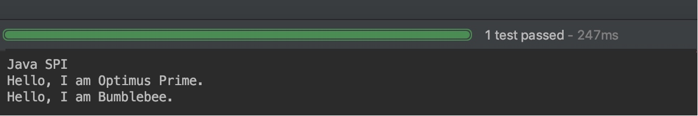

1.简介
SPI 全称为 Service Provider Interface，是一种服务发现机制。SPI 的本质是将接口实现类的全限定名配置在文件中，并由服务加载器读取配置文件，加载实现类。这样可以在运行时，动态为接口替换实现类。正因此特性，我们可以很容易的通过 SPI 机制为我们的程序提供拓展功能。SPI 机制在第三方框架中也有所应用，比如 Dubbo 就是通过 SPI 机制加载所有的组件。不过，Dubbo 并未使用 Java 原生的 SPI 机制，而是对其进行了增强，使其能够更好的满足需求。在 Dubbo 中，SPI 是一个非常重要的模块。基于 SPI，我们可以很容易的对 Dubbo 进行拓展。如果大家想要学习 Dubbo 的源码，SPI 机制务必弄懂。接下来，我们先来了解一下 Java SPI 与 Dubbo SPI 的用法，然后再来分析 Dubbo SPI 的源码。
需要特别说明的是，本篇文章以及本系列其他文章所分析的源码版本均为 dubbo-2.6.4。因此大家在阅读文章的过程中，需注意将代码版本切换到 dubbo-2.6.4 tag 上。
2.SPI 示例
2.1 Java SPI 示例
前面简单介绍了 SPI 机制的原理，本节通过一个示例演示 Java SPI 的使用方法。首先，我们定义一个接口，名称为 Robot。
public interface Robot {
void sayHello();
}
接下来定义两个实现类，分别为 OptimusPrime 和 Bumblebee。
public class OptimusPrime implements Robot {
@Override
public void sayHello() {
System.out.println("Hello, I am Optimus Prime.");
}
}
public class Bumblebee implements Robot {
@Override
public void sayHello() {
System.out.println("Hello, I am Bumblebee.");
}
}
接下来 META-INF/services 文件夹下创建一个文件，名称为 Robot 的全限定名 org.apache.spi.Robot。文件内容为实现类的全限定的类名，如下：
org.apache.spi.OptimusPrime
org.apache.spi.Bumblebee
做好所需的准备工作，接下来编写代码进行测试。
public class JavaSPITest {
@Test
public void sayHello() throws Exception {
ServiceLoader<Robot> serviceLoader = ServiceLoader.load(Robot.class);
System.out.println("Java SPI");
serviceLoader.forEach(Robot::sayHello);
}
}
最后来看一下测试结果，如下：

从测试结果可以看出，我们的两个实现类被成功的加载，并输出了相应的内容。关于 Java SPI 的演示先到这里，接下来演示 Dubbo SPI。
2.2 Dubbo SPI 示例
Dubbo 并未使用 Java SPI，而是重新实现了一套功能更强的 SPI 机制。Dubbo SPI 的相关逻辑被封装在了 ExtensionLoader 类中，通过 ExtensionLoader，我们可以加载指定的实现类。Dubbo SPI 所需的配置文件需放置在 META-INF/dubbo 路径下，配置内容如下。
optimusPrime = org.apache.spi.OptimusPrime
bumblebee = org.apache.spi.Bumblebee
与 Java SPI 实现类配置不同，Dubbo SPI 是通过键值对的方式进行配置，这样我们可以按需加载指定的实现类。另外，在测试 Dubbo SPI 时，需要在 Robot 接口上标注 @SPI 注解。下面来演示 Dubbo SPI 的用法：
public class DubboSPITest {
@Test
public void sayHello() throws Exception {
ExtensionLoader<Robot> extensionLoader =
ExtensionLoader.getExtensionLoader(Robot.class);
Robot optimusPrime = extensionLoader.getExtension("optimusPrime");
optimusPrime.sayHello();
Robot bumblebee = extensionLoader.getExtension("bumblebee");
bumblebee.sayHello();
}
}
测试结果如下：

Dubbo SPI 除了支持按需加载接口实现类，还增加了 IOC 和 AOP 等特性，这些特性将会在接下来的源码分析章节中一一进行介绍。
3. Dubbo SPI 源码分析
上一章简单演示了 Dubbo SPI 的使用方法。我们首先通过 ExtensionLoader 的 getExtensionLoader 方法获取一个 ExtensionLoader 实例，然后再通过 ExtensionLoader 的 getExtension 方法获取拓展类对象。这其中，getExtensionLoader 方法用于从缓存中获取与拓展类对应的 ExtensionLoader，若缓存未命中，则创建一个新的实例。该方法的逻辑比较简单，本章就不进行分析了。下面我们从 ExtensionLoader 的 getExtension 方法作为入口，对拓展类对象的获取过程进行详细的分析。
public T getExtension(String name) {
if (name == null || name.length() == 0)
throw new IllegalArgumentException("Extension name == null");
if ("true".equals(name)) {
// 获取默认的拓展实现类
return getDefaultExtension();
}
// Holder，顾名思义，用于持有目标对象
Holder<Object> holder = cachedInstances.get(name);
if (holder == null) {
cachedInstances.putIfAbsent(name, new Holder<Object>());
holder = cachedInstances.get(name);
}
Object instance = holder.get();
// 双重检查
if (instance == null) {
synchronized (holder) {
instance = holder.get();
if (instance == null) {
// 创建拓展实例
instance = createExtension(name);
// 设置实例到 holder 中
holder.set(instance);
}
}
}
return (T) instance;
}
上面代码的逻辑比较简单，首先检查缓存，缓存未命中则创建拓展对象。下面我们来看一下创建拓展对象的过程是怎样的。
private T createExtension(String name) {
// 从配置文件中加载所有的拓展类，可得到“配置项名称”到“配置类”的映射关系表
Class<?> clazz = getExtensionClasses().get(name);
if (clazz == null) {
throw findException(name);
}
try {
T instance = (T) EXTENSION_INSTANCES.get(clazz);
if (instance == null) {
// 通过反射创建实例
EXTENSION_INSTANCES.putIfAbsent(clazz, clazz.newInstance());
instance = (T) EXTENSION_INSTANCES.get(clazz);
}
// 向实例中注入依赖
injectExtension(instance);
Set<Class<?>> wrapperClasses = cachedWrapperClasses;
if (wrapperClasses != null && !wrapperClasses.isEmpty()) {
// 循环创建 Wrapper 实例
for (Class<?> wrapperClass : wrapperClasses) {
// 将当前 instance 作为参数传给 Wrapper 的构造方法，并通过反射创建 Wrapper 实例。
// 然后向 Wrapper 实例中注入依赖，最后将 Wrapper 实例再次赋值给 instance 变量
instance = injectExtension(
(T) wrapperClass.getConstructor(type).newInstance(instance));
}
}
return instance;
} catch (Throwable t) {
throw new IllegalStateException("...");
}
}
createExtension 方法的逻辑稍复杂一下，包含了如下的步骤：
- 通过 getExtensionClasses 获取所有的拓展类
- 通过反射创建拓展对象
- 向拓展对象中注入依赖
- 将拓展对象包裹在相应的 Wrapper 对象中
以上步骤中，第一个步骤是加载拓展类的关键，第三和第四个步骤是 Dubbo IOC 与 AOP 的具体实现。在接下来的章节中，将会重点分析 getExtensionClasses 方法的逻辑，以及简单介绍 Dubbo IOC 的具体实现。
3.1 获取所有的拓展类
我们在通过名称获取拓展类之前，首先需要根据配置文件解析出拓展项名称到拓展类的映射关系表（Map\<名称, 拓展类>），之后再根据拓展项名称从映射关系表中取出相应的拓展类即可。相关过程的代码分析如下：
private Map<String, Class<?>> getExtensionClasses() {
// 从缓存中获取已加载的拓展类
Map<String, Class<?>> classes = cachedClasses.get();
// 双重检查
if (classes == null) {
synchronized (cachedClasses) {
classes = cachedClasses.get();
if (classes == null) {
// 加载拓展类
classes = loadExtensionClasses();
cachedClasses.set(classes);
}
}
}
return classes;
}
这里也是先检查缓存，若缓存未命中，则通过 synchronized 加锁。加锁后再次检查缓存，并判空。此时如果 classes 仍为 null，则通过 loadExtensionClasses 加载拓展类。下面分析 loadExtensionClasses 方法的逻辑。
private Map<String, Class<?>> loadExtensionClasses() {
// 获取 SPI 注解，这里的 type 变量是在调用 getExtensionLoader 方法时传入的
final SPI defaultAnnotation = type.getAnnotation(SPI.class);
if (defaultAnnotation != null) {
String value = defaultAnnotation.value();
if ((value = value.trim()).length() > 0) {
// 对 SPI 注解内容进行切分
String[] names = NAME_SEPARATOR.split(value);
// 检测 SPI 注解内容是否合法，不合法则抛出异常
if (names.length > 1) {
throw new IllegalStateException("more than 1 default extension name on extension...");
}
// 设置默认名称，参考 getDefaultExtension 方法
if (names.length == 1) {
cachedDefaultName = names[0];
}
}
}
Map<String, Class<?>> extensionClasses = new HashMap<String, Class<?>>();
// 加载指定文件夹下的配置文件
loadDirectory(extensionClasses, DUBBO_INTERNAL_DIRECTORY);
loadDirectory(extensionClasses, DUBBO_DIRECTORY);
loadDirectory(extensionClasses, SERVICES_DIRECTORY);
return extensionClasses;
}
loadExtensionClasses 方法总共做了两件事情，一是对 SPI 注解进行解析，二是调用 loadDirectory 方法加载指定文件夹配置文件。SPI 注解解析过程比较简单，无需多说。下面我们来看一下 loadDirectory 做了哪些事情。
private void loadDirectory(Map<String, Class<?>> extensionClasses, String dir) {
// fileName = 文件夹路径 + type 全限定名
String fileName = dir + type.getName();
try {
Enumeration<java.net.URL> urls;
ClassLoader classLoader = findClassLoader();
// 根据文件名加载所有的同名文件
if (classLoader != null) {
urls = classLoader.getResources(fileName);
} else {
urls = ClassLoader.getSystemResources(fileName);
}
if (urls != null) {
while (urls.hasMoreElements()) {
java.net.URL resourceURL = urls.nextElement();
// 加载资源
loadResource(extensionClasses, classLoader, resourceURL);
}
}
} catch (Throwable t) {
logger.error("...");
}
}
loadDirectory 方法先通过 classLoader 获取所有资源链接，然后再通过 loadResource 方法加载资源。我们继续跟下去，看一下 loadResource 方法的实现。
private void loadResource(Map<String, Class<?>> extensionClasses,
ClassLoader classLoader, java.net.URL resourceURL) {
try {
BufferedReader reader = new BufferedReader(
new InputStreamReader(resourceURL.openStream(), "utf-8"));
try {
String line;
// 按行读取配置内容
while ((line = reader.readLine()) != null) {
// 定位 # 字符
final int ci = line.indexOf('#');
if (ci >= 0) {
// 截取 # 之前的字符串，# 之后的内容为注释，需要忽略
line = line.substring(0, ci);
}
line = line.trim();
if (line.length() > 0) {
try {
String name = null;
int i = line.indexOf('=');
if (i > 0) {
// 以等于号 = 为界，截取键与值
name = line.substring(0, i).trim();
line = line.substring(i + 1).trim();
}
if (line.length() > 0) {
// 加载类，并通过 loadClass 方法对类进行缓存
loadClass(extensionClasses, resourceURL,
Class.forName(line, true, classLoader), name);
}
} catch (Throwable t) {
IllegalStateException e = new IllegalStateException("Failed to load extension class...");
}
}
}
} finally {
reader.close();
}
} catch (Throwable t) {
logger.error("Exception when load extension class...");
}
}
loadResource 方法用于读取和解析配置文件，并通过反射加载类，最后调用 loadClass 方法进行其他操作。loadClass 方法用于主要用于操作缓存，该方法的逻辑如下：
private void loadClass(Map<String, Class<?>> extensionClasses, java.net.URL resourceURL,
Class<?> clazz, String name) throws NoSuchMethodException {
if (!type.isAssignableFrom(clazz)) {
throw new IllegalStateException("...");
}
// 检测目标类上是否有 Adaptive 注解
if (clazz.isAnnotationPresent(Adaptive.class)) {
if (cachedAdaptiveClass == null) {
// 设置 cachedAdaptiveClass缓存
cachedAdaptiveClass = clazz;
} else if (!cachedAdaptiveClass.equals(clazz)) {
throw new IllegalStateException("...");
}
// 检测 clazz 是否是 Wrapper 类型
} else if (isWrapperClass(clazz)) {
Set<Class<?>> wrappers = cachedWrapperClasses;
if (wrappers == null) {
cachedWrapperClasses = new ConcurrentHashSet<Class<?>>();
wrappers = cachedWrapperClasses;
}
// 存储 clazz 到 cachedWrapperClasses 缓存中
wrappers.add(clazz);
// 程序进入此分支，表明 clazz 是一个普通的拓展类
} else {
// 检测 clazz 是否有默认的构造方法，如果没有，则抛出异常
clazz.getConstructor();
if (name == null || name.length() == 0) {
// 如果 name 为空，则尝试从 Extension 注解中获取 name，或使用小写的类名作为 name
name = findAnnotationName(clazz);
if (name.length() == 0) {
throw new IllegalStateException("...");
}
}
// 切分 name
String[] names = NAME_SEPARATOR.split(name);
if (names != null && names.length > 0) {
Activate activate = clazz.getAnnotation(Activate.class);
if (activate != null) {
// 如果类上有 Activate 注解，则使用 names 数组的第一个元素作为键，
// 存储 name 到 Activate 注解对象的映射关系
cachedActivates.put(names[0], activate);
}
for (String n : names) {
if (!cachedNames.containsKey(clazz)) {
// 存储 Class 到名称的映射关系
cachedNames.put(clazz, n);
}
Class<?> c = extensionClasses.get(n);
if (c == null) {
// 存储名称到 Class 的映射关系
extensionClasses.put(n, clazz);
} else if (c != clazz) {
throw new IllegalStateException("...");
}
}
}
}
}
如上，loadClass 方法操作了不同的缓存，比如 cachedAdaptiveClass、cachedWrapperClasses 和 cachedNames 等等。除此之外，该方法没有其他什么逻辑了。
到此，关于缓存类加载的过程就分析完了。整个过程没什么特别复杂的地方，大家按部就班的分析即可，不懂的地方可以调试一下。接下来，我们来聊聊 Dubbo IOC 方面的内容。
3.2 Dubbo IOC
Dubbo IOC 是通过 setter 方法注入依赖。Dubbo 首先会通过反射获取到实例的所有方法，然后再遍历方法列表，检测方法名是否具有 setter 方法特征。若有，则通过 ObjectFactory 获取依赖对象，最后通过反射调用 setter 方法将依赖设置到目标对象中。整个过程对应的代码如下：
private T injectExtension(T instance) {
try {
if (objectFactory != null) {
// 遍历目标类的所有方法
for (Method method : instance.getClass().getMethods()) {
// 检测方法是否以 set 开头，且方法仅有一个参数，且方法访问级别为 public
if (method.getName().startsWith("set")
&& method.getParameterTypes().length == 1
&& Modifier.isPublic(method.getModifiers())) {
// 获取 setter 方法参数类型
Class<?> pt = method.getParameterTypes()[0];
try {
// 获取属性名，比如 setName 方法对应属性名 name
String property = method.getName().length() > 3 ?
method.getName().substring(3, 4).toLowerCase() +
method.getName().substring(4) : "";
// 从 ObjectFactory 中获取依赖对象
Object object = objectFactory.getExtension(pt, property);
if (object != null) {
// 通过反射调用 setter 方法设置依赖
method.invoke(instance, object);
}
} catch (Exception e) {
logger.error("fail to inject via method...");
}
}
}
}
} catch (Exception e) {
logger.error(e.getMessage(), e);
}
return instance;
}
在上面代码中，objectFactory 变量的类型为 AdaptiveExtensionFactory，AdaptiveExtensionFactory 内部维护了一个 ExtensionFactory 列表，用于存储其他类型的 ExtensionFactory。Dubbo 目前提供了两种 ExtensionFactory，分别是 SpiExtensionFactory 和 SpringExtensionFactory。前者用于创建自适应的拓展，后者是用于从 Spring 的 IOC 容器中获取所需的拓展。这两个类的类的代码不是很复杂，这里就不一一分析了。
Dubbo IOC 目前仅支持 setter 方式注入，总的来说，逻辑比较简单易懂。
4.总结
本篇文章简单分别介绍了 Java SPI 与 Dubbo SPI 用法，并对 Dubbo SPI 的加载拓展类的过程进行了分析。另外，在 Dubbo SPI 中还有一块重要的逻辑这里没有进行分析，即 Dubbo SPI 的扩展点自适应机制。该机制的逻辑较为复杂，我们将会在下一篇文章中进行详细的分析。
好了，本篇文章就先到这里了。如果文章中有错误不妥之处，欢迎大家提 issue 进行反馈，或者提 pull request 进行修正。让我们携手共建 Dubbo 社区。